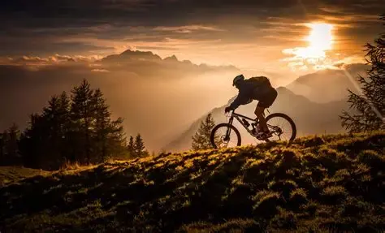

En el proceso de dejar el sobrepeso tuve que hacer cardio, con ello, llego el MTB, empece a salir en bici, saltar, encontre algunas calles sin pavimentar y eran divertidas, decidi aventurarme al cerro y las bajadas peligorosas fueron aun mas divertidas, fui a una competencia de 32km, no quede primero pero tampoco ultimo, pero fue muy divertido, ya no suelo hacerlo por tiempo, pero es muy divertido.
